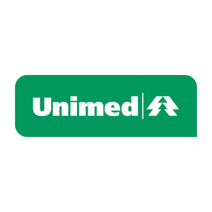
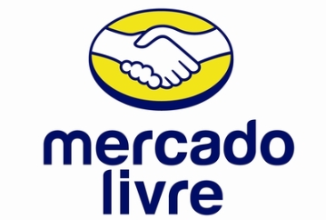
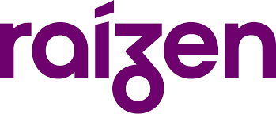
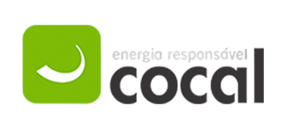
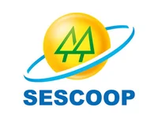
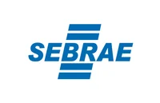

Treinamentos Corporativos
Programas presenciais e online para lideranças de primeiro nível e equipes operacionais, com foco em comportamento, comunicação e resultado.
Saiba maisDesenvolvimento de Pessoas
Treinamentos, palestras e trilhas de liderança para cooperativas e empresas. Conteúdo aplicado para o dia a dia, não apenas para o slide.
Algumas das empresas já atendidas









Serviços
Soluções práticas para desenvolver pessoas, da operação à liderança, em cooperativas e empresas de todos os portes.
Ver portfólio completoProgramas presenciais e online para lideranças de primeiro nível e equipes operacionais, com foco em comportamento, comunicação e resultado.
Saiba maisConteúdo aplicado em liderança, comportamento, neurociência e gestão de conflitos. Ajustado ao contexto da sua organização.
Saiba maisProgramas estruturados de aprendizagem contínua, desenhados sob medida para o perfil das suas lideranças e os objetivos da organização.
Saiba maisMapeamento das necessidades de desenvolvimento, com análise de perfil comportamental e identificação de gaps de liderança.
Saiba mais
Sobre Paulo Cortez
Engenheiro de Produção com MBA em Gestão de Pessoas pela FGV. Uno o rigor de processo com a leitura do comportamento humano. Atuo com cooperativas e empresas de diferentes portes, combinando neurociência aplicada, PNL e psicanálise numa abordagem direta, para quem opera e decide no dia a dia.
Depoimentos
Parceiros

Parceria com o Serviço Nacional de Aprendizagem do Cooperativismo para desenvolvimento de pessoas em cooperativas de todo o Brasil.

Parceria com o Serviço Brasileiro de Apoio às Micro e Pequenas Empresas para capacitação e desenvolvimento de pessoas em pequenos negócios.
Para programas de alta liderança, atuo em parceria com a Enora, plataforma especializada em desenvolvimento de lideranças executivas e estratégicas.
Materiais e Ferramentas Gratuitas
Um checklist prático para identificar hoje mesmo se os supervisores e líderes de primeiro nível da sua equipe estão prontos para o próximo passo.
Uma ferramenta simples para organizar suas tarefas por prioridade. Salve o link no navegador e use sempre que precisar decidir o que fazer primeiro, sem se perder em meio a tantas demandas.
Como usar: abra o link, liste suas tarefas e posicione cada uma na matriz conforme urgência e importância. O resultado mostra o que fazer primeiro, o que agendar, delegar ou descartar.
paulocortez.com.br/matrizdecisao
Perguntas frequentes
Se não encontrar o que precisa, fale direto pelo WhatsApp ou preencha o briefing.
Próximo passo
Fale pelo WhatsApp, envie um e-mail ou preencha o briefing para receber uma proposta sob medida.